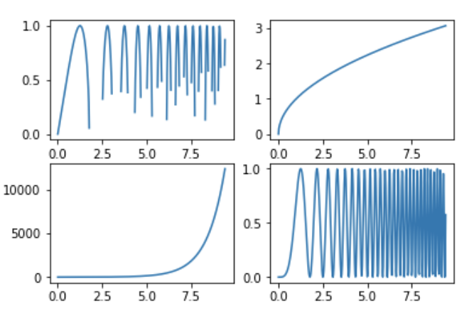
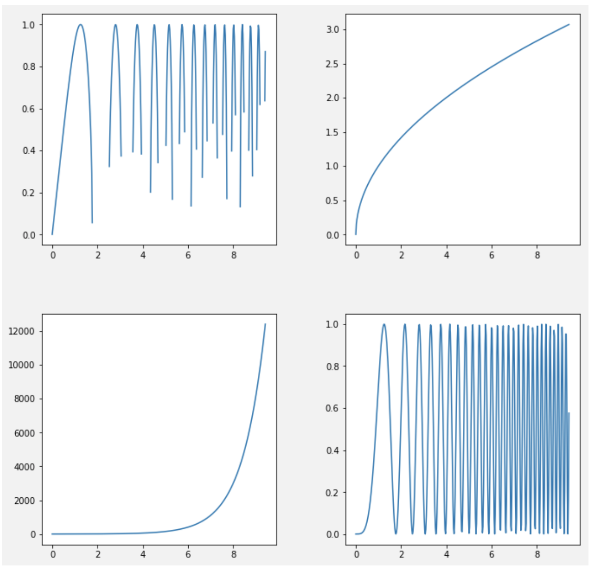
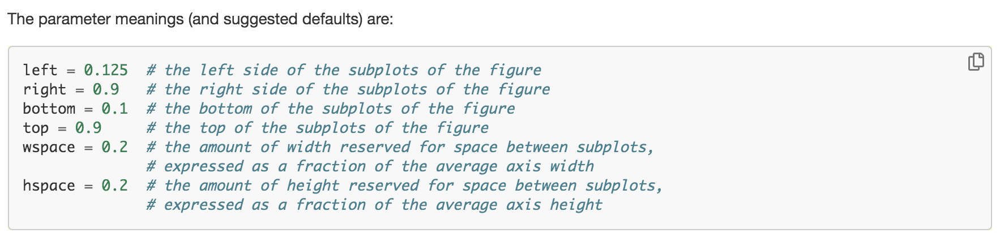
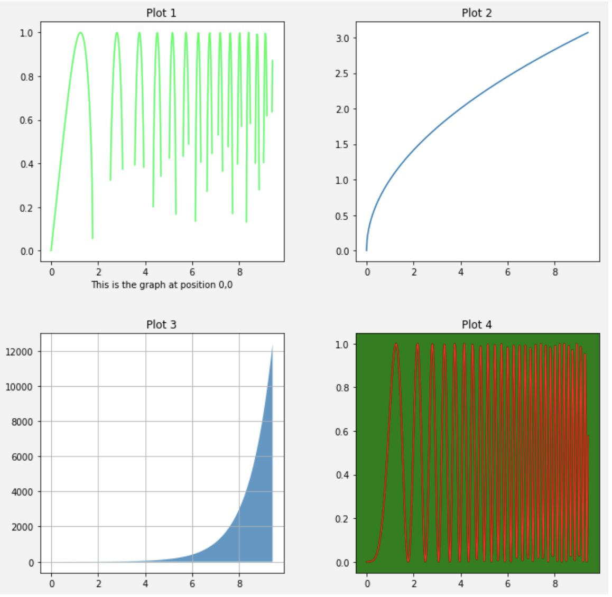
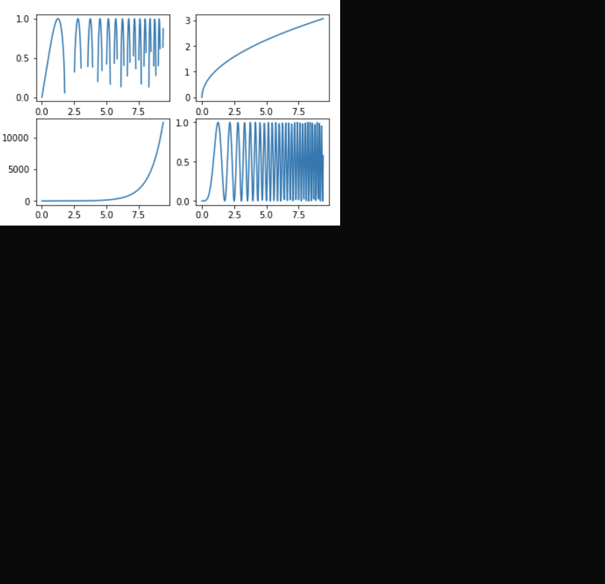

- Sun 08 December 2019
- misc
- Rittik Ghosh
Demystifying matplotlib subplots
Everyone who has explored visualizations in python has encountered the infamous: fig, ax= plt.subplots()
However, it isn't always obvious what's happening behind the scenes. In this post, we explore what it means and how we can utilize subplots to create powerful visualizations. The subplot function accepts, nrows & ncols as parameters. Setting nrows = 2 and ncols = 2 creates a 2 by 2 grid that can be filled with 4 graphs (by default subplots creates a 1 by 1 grid for one graph). We can also have shared axes between all the graphs by setting sharex=True and/or sharey=True.
The subplot() function returns figure and axes objects. The figure (fig) acts as a container for all the subplots. By manipulating fig we can make changes to our entire graphing area but not to individual plots.
Subplotting our data with no formatting:

Here are some useful operations on fig:
import matplotlib.pyplot as plt
import numpy as np
import numpy.random
fig,ax = plt.subplots(2,2)
# Let's add some padding between the graphs
fig.tight_layout()
# Increase the width of the plotting area:
fig.set_figwidth(10)
# Increase the Height of the plotting area:
fig.set_figheight(10)
# Adding a background color.
fig.set_facecolor("#f2f2f2")
ax[0][0].plot(x,y**0.5)
ax[0][1].plot(x,np.sqrt(x))
ax[1][0].plot(x,np.exp(x))
ax[1][1].plot(x,y**2);
After some formatting with the fig object:

We can also achieve greater control in positioning for our subplots by calling plt.subplots_adjust()

The axes object (ax) returned by the subplot helps us control each individual graph or plot. In our case, we have created a 2 * 2 grid and the graph on the top-left can be manipulated by using ax at [0, 0]. This lets us add individual styling to each graph. We can also use loops to programmatically create and/or edit plots.
Let's try to add some formatting to each individual graph using ax.
fig,ax = plt.subplots(2,2)
fig.tight_layout()
fig.set_figwidth(10)
fig.set_figheight(10)
fig.set_facecolor("#f2f2f2")
#Graph 1, Position [0,0]
ax[0][0].plot(x,y**0.5, color="#00ff40")
ax[0][0].set_title('Plot 1')
ax[0][0].set_xlabel('This is the graph at position 0,0')
#Graph 2, Position [0,1]
ax[0][1].plot(x,np.sqrt(x))
ax[0][1].set_title('Plot 2')
#Graph 3, Position [1,0]
ax[1][0].fill_between(x,np.exp(x),alpha=0.75)
ax[1][0].set_title('Plot 3')
ax[1][0].grid()
#Graph 4, Position [1,1]
ax[1][1].plot(x,y**2, color="red")
ax[1][1].set_title('Plot 4')
ax[1][1].set_facecolor('green');
Adding formatting to individual plots with ax:

This is a brief introduction to subplots. Matplotlib is a powerful library with several customization options. Here are links to official documentation.
Figure
Axes
Subplots
Formatting options for lines
All our formatting operations in sequence:
